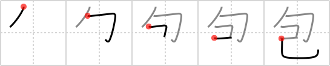

包
← →
wrap

Reading:
On-Yomi: ホウ — Kun-Yomi: つつ.む、くる.む
Heisig story:
Bind up . . . snake.
Heisig comment:
* The primitive meaning of wrap should always be used with the snake in mind to avoid confusion with similar terms. Just let "wrap" mean "with a snake coiled about it."
Koohii stories:
1) [Copycatken] 7-6-2006(216): The snake bound up its prey by wrapping his body around it.
2) [dicedice] 4-8-2007(37): Imagine Jessie sending in her Ekans (snake pokemon), and telling it to use bind attack to wrap up pikachu.
3) [burritokun] 28-8-2008(22): Wrap it before you tap it (wrap what? your snake, of course…).
4) [tharvey] 19-6-2009(14): Picture a snake all bound up in wrapping paper (to keep from confusing it with other kanji).
5) [uchifly] 27-2-2009(8): When you WRAP a Christmas gift, you BIND it UP by your - SELF.